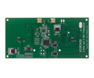
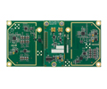

产品中心 » USRP 子板系列


XCVR2450
XCVR2450 USRP子板（2.4-2.5GHz，4.9-5.9GHz的）双频
该XCVR2450是用于操作2.4GHz和5.9GHz的范围内的高性能收发器。筛选的XCVR2450提供卓越的选择性和动态范围操作的预期带。典型的功率输出XCVR2450为100毫瓦。应用实例包括公共安全，UNII，ISM，日本的无线和UWB的发展平台。
所述XCVR2450是半双工收发器。在2.4 GHz范围内全双工操作，见SBX。
该XCVR2450子进行了修订，以提高其规范，不再与USRP1兼容。对于要专门用于与USRP1需要一个XCVR2450子应用，请购买XCVR2450-U1。
不推荐用于新的设计。请考虑CBX，SBX或UBX代替。
所述XCVR2450是半双工收发器。在2.4 GHz范围内全双工操作，见SBX。
该XCVR2450子进行了修订，以提高其规范，不再与USRP1兼容。对于要专门用于与USRP1需要一个XCVR2450子应用，请购买XCVR2450-U1。
不推荐用于新的设计。请考虑CBX，SBX或UBX代替。
查看产品的细节»
询问报价



WBX
WBX USRP子板（50兆赫 - 2.2 GHz）的有2 MCX舱壁射频电缆
该WBX是一个宽的带宽收发器，可提供高达100mW的输出功率和5分贝的噪声系数。本振的用于接收和发射链独立地工作，但可以用于MIMO操作同步。该WBX提供40 MHz的带宽容量，非常适合需要访问一些在其范围内不同频段的应用 - 50 MHz至2.2 GHz的。例如，应用领域包括陆地移动通信，海上和航空波段收音机;手机基站，PCS和GSM多波段收音机;相干多静态雷达;无线传感器网络;收发器覆盖6业余乐队;广播电视;空格;公共安全; ISM。截至2013年5月22日的，该套件包括两个MCX-闷头电缆。第二电缆仅需要用于需要全双工操作或使用上的WBX两个连接的应用程序。
查看产品的细节»
询问报价